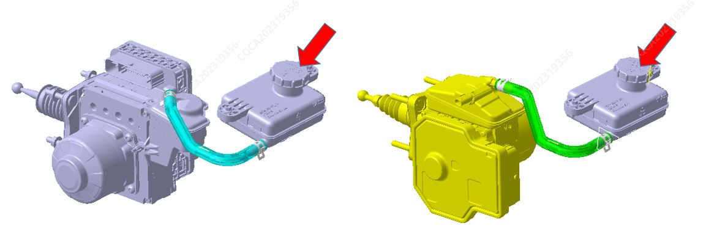
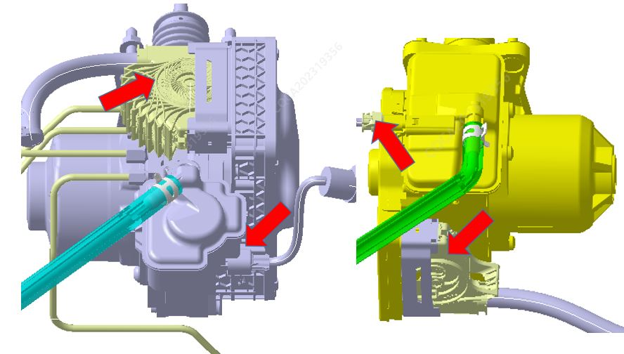
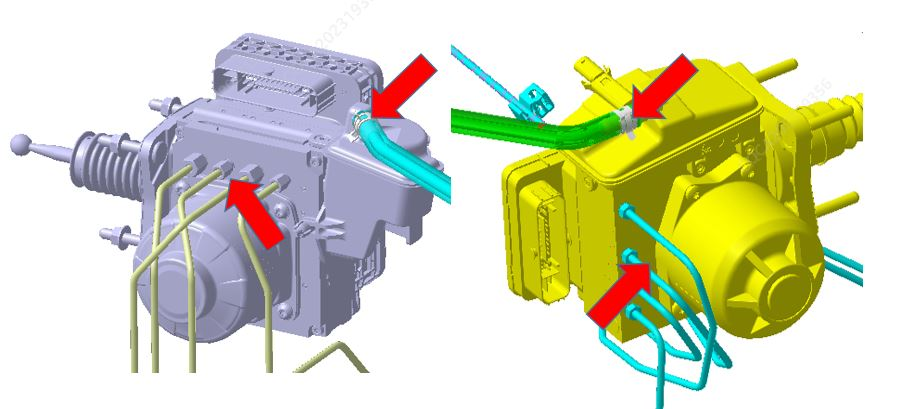
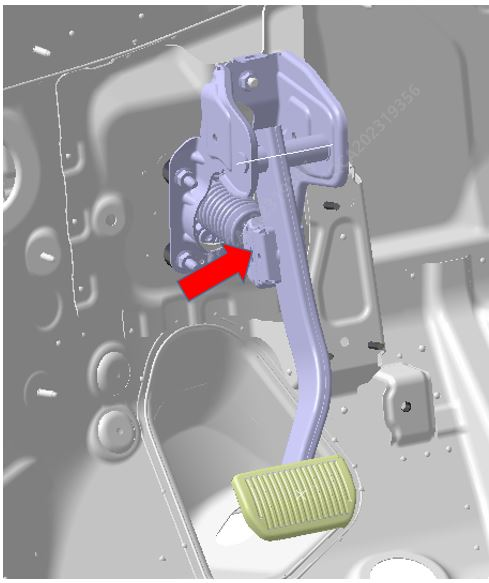
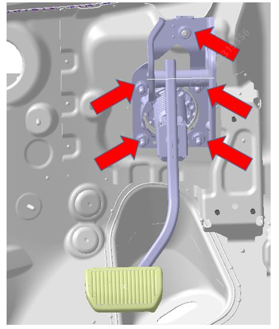

材料
| 名称 | 型号 |
| 制动液 | HZY4/DOT4 |
拆卸
整车下电后断开蓄电池负极线束。参考 蓄电池总成
排放储液罐内的制动液。
取下远程储液罐盖。

使用一适当干净的塑料管，一端接上制动器排气嘴，另一端通入一适当的容器中。
旋松排气嘴。
保持下电，反复踩制动踏板直到储液罐中所有制动液全部排出。
旋紧排气嘴。
拆下制动液位传感器插头和控制模块线束接插件，拆卸过程中需避免接插件被油污污染，位置如图所示。

拆下连接软管与IBCU卡箍，拔下连接软管，再采用M10与M12开口扳手从集成制动控制模块上拆下制动油管，扭力16±2N.m/18±2N.m。

拆卸集成制动控制模块。
拆卸制动踏板与集成制动控制模块连接的球笼。

采用M13内六角套筒拆卸集成制动控制模块与制动踏板4颗固定螺母和制动踏板与车身连接的1颗螺母，扭力22±2N.m。

向外取出集成制动控制模块
安装